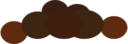
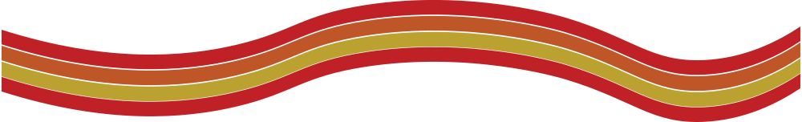

A geyser is a rare natural phenomenon where heated water from deep below the surface of the earth races to a vent on the surface and errupts in a bubbly show of water and steam. Geysers may errupt at regular time intervals. Old Faithful, located in Yellowstone National Park, errupts every 35 to 120 minutes.
Learn more about geysers on Wikipedia
A fountain of hot water and steam errupts about once per hour.
A reservoir of water collects at the bottom.
Hot rocks heat up the water until it boils.
